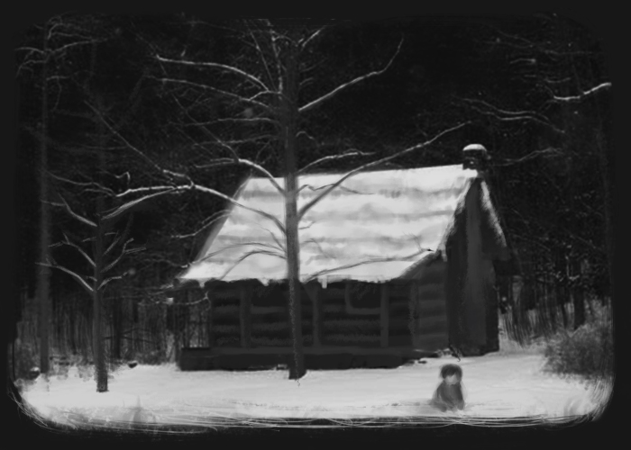
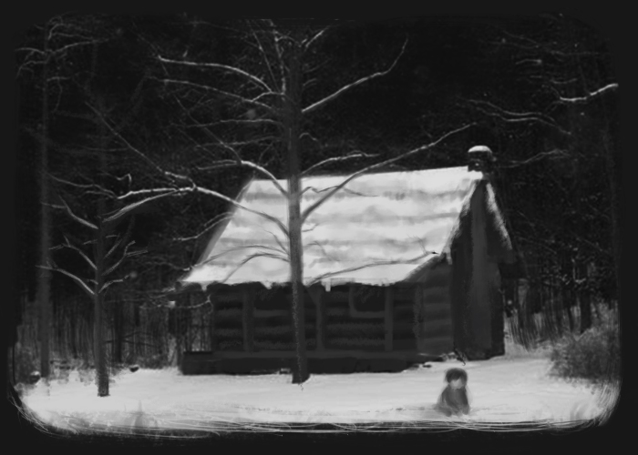

Next to a great forest there lived a poor woodcutter with his wife and his two children. The boy's name was Hansel and the girl's name was Gretel. He had but little to eat, and once, when a great famine came to the land, he could no longer provide even their daily bread.